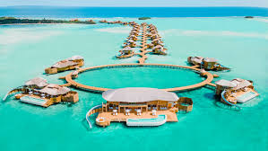
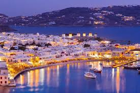

Santorini is a beautiful Greek island known for its stunning sunsets, white-washed buildings, and clear blue waters. The island has many activities to offer, such as hiking, wine tasting, and swimming in hot springs.
Learn more about SantoriniThe Maldives is a tropical paradise made up of more than 1,000 coral islands. Visitors can relax on white sandy beaches, snorkel or dive in crystal clear waters, and indulge in luxurious spa treatments.
 Learn more about MaldivesMykonos is a popular Greek island known for its stunning beaches, beautiful blue waters, and vibrant nightlife. Visitors can explore the island's charming streets, take in the beautiful sunsets, and enjoy delicious Mediterranean cuisine.
 Learn more about Mykonos